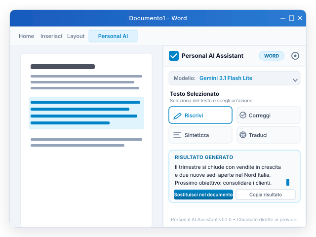
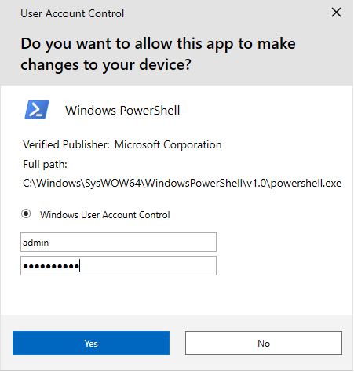

Word
- Riscrive, corregge, riassume e traduce il testo selezionato
- Risponde a domande sul documento
Chiamate dirette dal tuo PC ai provider con la tua chiave personale. Nessun server intermedio.
PersonalAIAssistant-…-Setup.exe nell'ultima versione pubblicata.

Illustrazione del pannello
Personal AI Assistant non funziona senza almeno una chiave API di Google Gemini, OpenAI, Anthropic Claude, Qwen, MiniMax, DeepSeek o OpenRouter. La chiave non è inclusa nell'installazione: la ottieni tu dal sito del provider ed è legata al tuo account e al tuo contratto con quel provider (piano gratuito o a pagamento, limiti, costi e condizioni sono i suoi). Senza chiave il pannello si apre ma non può elaborare nulla.
Il modo più semplice per iniziare gratis: una chiave Google AI Studio.
Questa è una versione beta e l'installatore non è firmato digitalmente: Windows non conosce l'editore e può mostrare avvisi. Non indica un problema nel file.
Per essere sicuro che il file sia quello originale, confronta l'impronta SHA-256 con quella indicata nella pagina della versione:
Get-FileHash .\PersonalAIAssistant-0.2.0-Setup.exe -Algorithm SHA256Chiudi Word, Excel e Outlook e avvia l'installazione. A metà, Windows chiede «Consentire a questa app di apportare modifiche?» per Windows PowerShell (editore verificato: Microsoft): rispondi Sì. Se il tuo utente non è amministratore, servono nome e password di un amministratore.

\\localhost\PersonalAIAssistant$, in sola lettura,
che contiene soltanto il file di configurazione del componente. Succede la prima volta su ogni PC e di nuovo solo se un aggiornamento cambia il file di configurazione. Outlook non la richiede.Apri Word (poi lo stesso in Excel e in PowerPoint) e vai su Home → Componenti aggiuntivi (Add-ins) → Altri componenti aggiuntivi, scheda CARTELLA CONDIVISA, seleziona Personal AI Assistant e premi Aggiungi.

Da quel momento trovi la scheda Personal AI nella barra in alto, a ogni avvio. Il componente non compare nell'elenco rapido del menu Add-ins: si usa dalla scheda.

Senza una chiave il componente non elabora nulla. La chiave è personale e non è fornita da Personal AI Assistant: Al primo utilizzo il pannello apre le impostazioni (ingranaggio): premi Ottieni chiave accanto al provider, crea la chiave nel suo sito, incollala e premi Salva chiavi. La più semplice da ottenere è quella di Google Gemini. In Outlook: Home → Personal AI → Impostazioni.
Le chiavi si inseriscono una volta nel pannello (vale per Word, Excel e PowerPoint) e una volta in Outlook: sono conservate separatamente. Consiglio: usa una chiave dedicata, con limite di spesa e avvisi di consumo se il provider li offre; se sospetti un abuso, revocala dal sito del provider.
Nella scheda Home trovi il gruppo Personal AI: Riassumi selezionate (seleziona più email con Ctrl+clic), Rispondi con AI e Impostazioni. Si apre sempre una bozza da rileggere: nessuna email viene inviata automaticamente.
Modello locale (facoltativo): in Impostazioni scegli Modello locale o in rete interna, indica l'indirizzo del server
(Ollama http://localhost:11434/v1, llama-server http://localhost:8080/v1, LM Studio http://localhost:1234/v1,
oppure l'indirizzo di un PC della rete) e il nome del modello. Le email non escono dalla tua rete; su un PC senza scheda grafica adatta le risposte possono richiedere molti secondi.
Le chiavi restano sul tuo PC e i testi vanno direttamente al provider che scegli, senza passare da server del progetto. Dettagli nell'informativa privacy.
Per aggiornare o riparare non serve disinstallare: avvia il nuovo file di installazione e conferma. Impostazioni e chiavi restano e in Office non devi rifare Aggiungi.
Per rimuoverlo:Impostazioni → App → App installate → Personal AI Assistant → Disinstalla. Alla fine viene chiesto se rimuovere anche la cartella condivisa del PC (rispondi No se altri utenti del PC usano Personal AI Assistant). Le chiavi del pannello di Word/Excel si cancellano dal pannello stesso (Cancella) prima di disinstallare.
Beta 0.1.0 e 0.2.0, Windows 11 con Office LTSC 2024 a 32 bit, utente amministratore e utente standard.
| Parte | Stato |
|---|---|
| Installazione, cartella condivisa, Aggiungi | Provati su utente standard |
| Word ed Excel (pannello, formule, analisi) | Provati in Office |
| Excel – grafici | Provati in Excel |
| PowerPoint | Creazione slide provata in PowerPoint 2024 |
| Outlook | Provato in Outlook classico |
| Qwen, MiniMax, DeepSeek, OpenRouter (0.2.0) | Indirizzi e accesso dal pannello verificati; non ancora provati con una chiave |
| Pannello con modello locale (sperimentale) | Da provare dentro Office: Office potrebbe bloccare l'accesso alla rete locale dal pannello |
| Outlook con modello locale (0.2.0) | Provato in Outlook classico (llama-server); chiamate provate anche con Ollama |
| Office a 64 bit, Microsoft 365, 2016–2021 | Non provati |